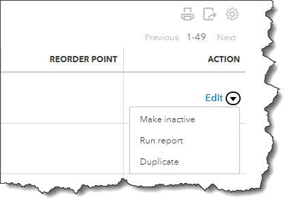

Here are seven ways you can be safe, compliant, and productive when you’re using QuickBooks Online.
“Best practices” is a phrase that human resources professionals have been using for decades. But every type of profession has its own best practices, whether they call it that or not. These guidelines are not enforceable rules, though some managers may build them into their official policies. They just describe the way work should be done to achieve optimal outcomes and keep data organized and secure.
You may have heard of Generally Accepted Accounting Principals (GAAP). Public companies are required to adhere to them, and many other businesses large and small follow these rules and procedures.
We’re not going to discuss GAAP in this month’s column. Rather, we’re going to talk about more general best practices for accounting, actions you can build into your QuickBooks Online work to make that time more productive and in line with what other successful businesses do.
How Do They Help?
Accounting best practices have numerous benefits. For example, they:
When you incorporate best practices into your work, you may even find that your relationships with customers and vendors get better because you’re handling their businesses ? conscientiously.
7 Suggestions For You
Here are seven guidelines that we try to follow. We hope you will, too.
Track your 1099 vendors
If your business employs contractors, make sure that you indicate their 1099 status in their vendor records.
Changes in the economy over the last few years have led some people to take on part-time (or even full-time) contract work. You should be creating vendor records for these individuals. Click Expenses in the tool bar and then select the Vendors tab. As you’re completing a record, you’ll see a section labeled Additional info. Check the box in front of Track payments for 1099. You can create and deliver your 1099s using QuickBooks Online when the time comes.
Reconcile, reconcile, reconcile
Once you’ve downloaded cleared transactions from your financial accounts, it’s important that you reconcile them. This is probably one of your least favorite tasks to undertake, but QuickBooks Online simplifies it for you some, walking you through the process. Reconciling accounts regularly can help you:
Keep your lists up to date
Your QuickBooks Online company file can grow substantially over the years. Though the site has great search capabilities, you may still be scrolling to find the entries you want. This isn’t as big a problem for lists like Payment Methods or Terms, but overly lengthy lists of Products and Services, Customers, and Vendors can become unwieldy over time. Try to keep them current. If you don’t want to delete them completely, you can make individual records inactive by clicking an Action link in the listing table for each.
If your QuickBooks Online Lists are getting too lengthy, you may be able to make some of the records Inactive.
Categorize and classify everything that you can
Your QuickBooks Online company file consists of hundreds or thousands of individual records and transactions. Though each is a separate entity, there will be many times when you want to be able to assemble groups of related ones. For example, you might want a list of all of your customers in a specific ZIP code or all services that go into the creation of a marketing program.
There’s more than one way to get this information quickly. You can customize reports. Assign Classes, Categories, and Tags. View a Project. Whatever method(s) you choose, do use them consistently. They can provide insight in a wide variety of ways that will help you make better business decisions.
Warning: Before you start making lists of these classification tools and assigning them, think carefully about what they should be. You can always add to and edit the lists, but you’ll want to make them as focused and flexible as you can. Let us know if you need help with this.
Assign user permissions carefully
QuickBooks Online makes it possible to restrict users to specific areas and functions on the site. Use these tools. You can find them by clicking the gear icon in the upper right and then Manage users. You trust your employees or you wouldn’t have hired them, but you need to put controls in place to protect your sensitive company data.
Use QuickBooks Online’s reports
Are you taking advantage of QuickBooks Online’s report templates? It’s absolutely essential that you keep up with reports in areas like Who owes you and What you owe. We can help with this. We can also generate and analyze the standard financial reports that you occasionally need, like Statement of Cash Flows and Profit and Loss.
Don’t leave QuickBooks Online running and walk away
This should go without saying if you’re in a multi-person office. Also, don’t use the QuickBooks Online mobile app on a public Wi-Fi network when you’re out and about. Your company file contains information about your customers, vendors, and employees that should never be compromised.
More Than Common Sense
These best practices may seem like common sense to you if you’ve been using QuickBooks Online for a while. But when you first start using web-based financial applications, they might not be second nature to you. That’s why we’re sharing them with you, to remind you that conscientious use of QuickBooks Online is critical to the safety, accuracy, and usefulness of your company data. As always, we’re here to answer any question you have.